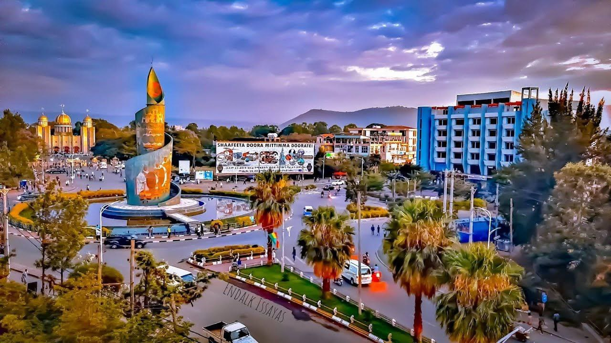
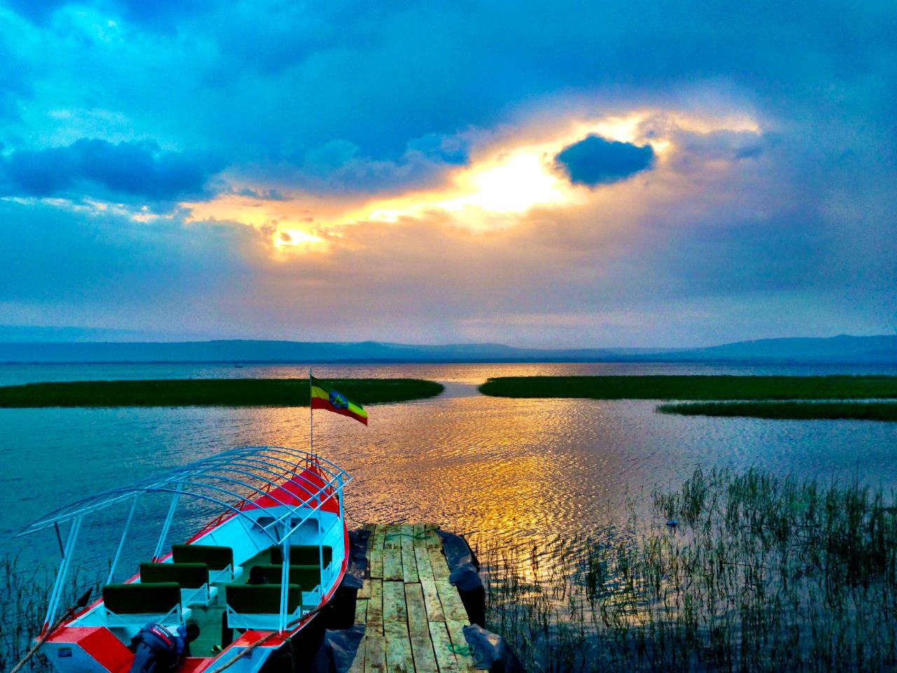
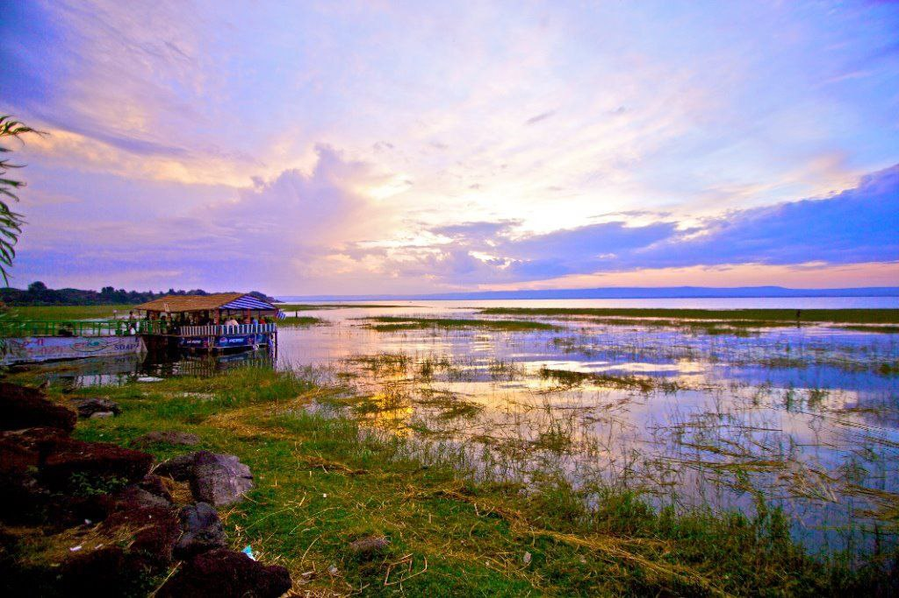
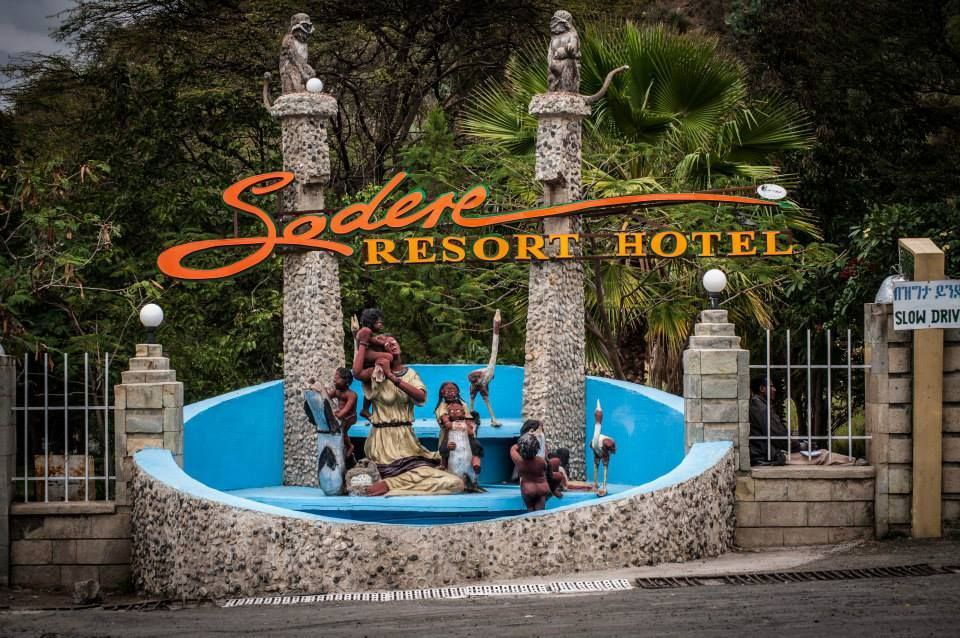
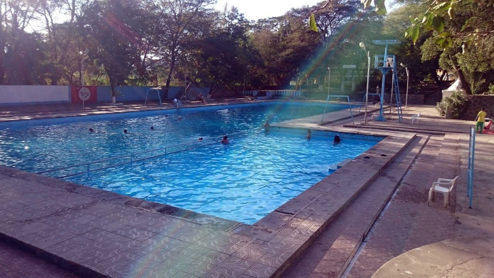
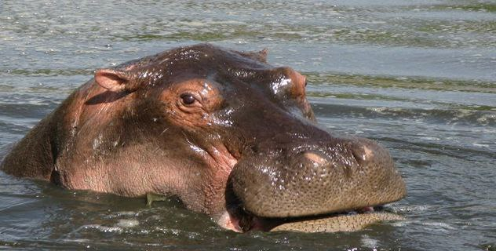
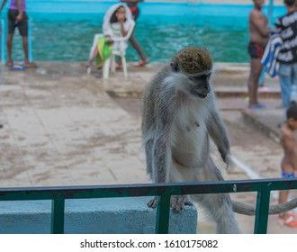

Hawassa

Hawassa is one of the most beautiful cities in Ethiopia. It is located in the Southern Nations, Nationalities, and Peoples' Region (SNNPR) and is the capital of the Sidama Zone. Hawassa is known for its stunning scenery, including its many lakes and mountains.


The city is also home to a number of historical and cultural attractions. I had the opportunity to visit Hawassa to attend my cousin's graduation from Hawassa University. I was immediately struck by the city's beauty. The lakes are a sight to behold, and the mountains provide a stunning backdrop.One of my favorite things about Hawassa was the food. The people of Hawassa were also very welcoming and friendly. I was always greeted with a smile, and everyone was eager to share their culture with me.
Overall, I had a wonderful time in Hawassa. It is a beautiful city with a lot to offer visitors. I would highly recommend it to anyone looking for a unique and unforgettable travel experience.
Sodere Resort

In my childhood I eagerly waited for school breaks just to go to this place. From the moment you arrive, you're greeted by the lush greenery and the soothing sounds of nature. The resort's centerpiece is its expansive swimming pool, where you can splash around and cool off under the Ethiopian sun. If you're looking for something more exhilarating, there's also a water slide that will send you soaring through the air.

For those seeking a more tranquil experience, the resort's hot tubs are the perfect place to unwind. Soak in the mineral-rich waters and let your worries melt away. The surrounding scenery is simply breathtaking, with towering mountains and lush vegetation providing a picturesque backdrop. But what really sets Sodere Resort apart is its abundance of wildlife. Keep your eyes peeled for monkeys, crocodiles, and even the occasional hippopotamus. The resort is a true paradise for animal lovers.

